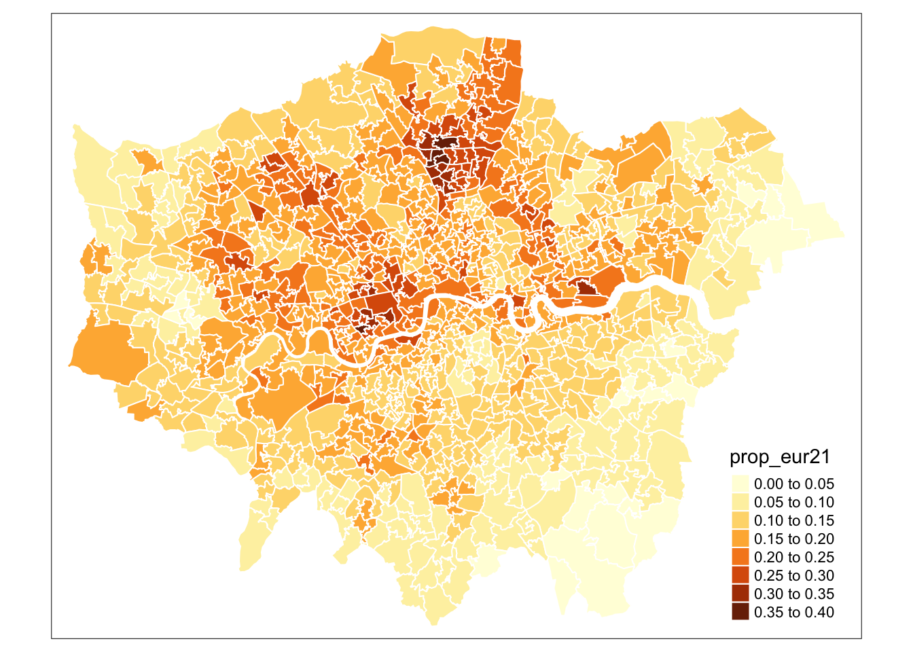
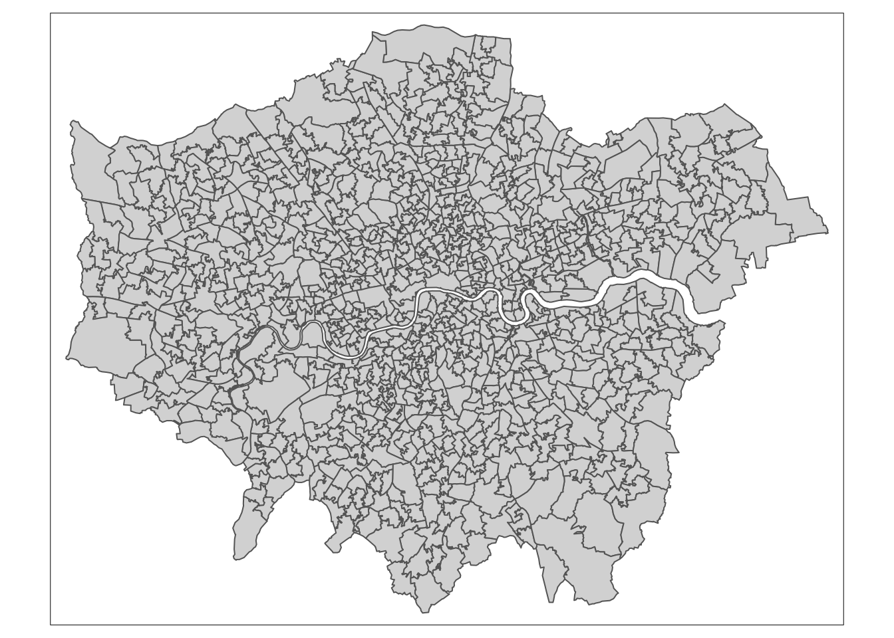

R code
# quick thematic map
qtm(msoa21, fill = "prop_eur21")This week’s lecture offered a comprehensive introduction to the Geocomputation module, highlighting how and why it differs from a traditional GIScience course. In this week’s tutorial, we will introduce you to using R and RStudio for working with spatial data, focusing specifically on how R can be used to make maps.
You can download the slides of this week’s lecture here: [Link].
In RStudio, scripts allow us to build and save code that can be run repeatedly. We can organise these scripts into RStudio projects, which consolidate all files related to an analysis such as input data, R scripts, results, figures, and more. This organisation helps keep track of all data, input, and output, while enabling us to create standalone scripts for each part of our analysis.
Navigate to File -> New Project -> New Directory. Choose a directory name, such as GEOG0030, and select the location on your computer where you want to save this project by clicking on Browse…. Click on Create Project.
Ensure you select an appropriate folder to store your GEOG0030 project. For example, you might use your Geocomputation folder, if you have one, or another location within your Documents directory on your computer.
Please ensure that folder names and file names do not contain spaces or special characters such as * . " / \ [ ] : ; | = , < ? > & $ # ! ' { } ( ). Different operating systems and programming languages deal differently with spaces and special characters and as such including these in your folder names and file names can cause many problems and unexpected errors. As an alternative to using white space you can use an underscore (_) or hyphen (-) if you like.
You should now see your main RStudio window switch to this new project and when you check your files pane, you should see a new R Project called GEOG0030.
With our GEOG0030 project ready to go, in this first tutorial we will look at the distribution of the share of European immigrants across London. The data covers the number of people residing in London that are born in a European country, as recorded in the 2021 Census for England and Wales, aggregated at the Middle Layer Super Output Area (MSOA) level.
An MSOA is a geographic unit used in the UK for statistical analysis. It typically represents small areas with populations of around 5,000 to 15,000 people and is designed to ensure consistent data reporting. MSOAs are commonly used to report on census data, deprivation indices, and other socio-economic statistics.
The dataset has been extracted using the Custom Dataset Tool, and you can download the file via the link provided below. Save the file in your project folder under data/attributes. Along with this dataset, we also have access to a GeoPackage that contains the MSOA boundaries. Save this file under data/spatial, respectively.
You will to have create a folder named data within your RStudio Project directory, inside which you will have to have a folder named attributes and a folder named spatial.
| File | Type | Link |
|---|---|---|
| London MSOA Census 2021 European Population | csv |
Download |
| London MSOA 2021 Spatial Boundaries | GeoPackage |
Download |
To download a csv file that is hosted on GitHub, click on the Download raw file button on the top right of your screen and it should download directly to your computer.
You may have used spatial data before and noticed that we did not download a collection of files known as a shapefile but a GeoPackage instead. Whilst shapefiles are still being used, GeoPackage is a more modern and portable file format. Have a look at this article on towardsdatascience.com for an excellent explanation on why one should use GeoPackage files over shapefiles where possible: [Link]
To get started, let us create our first script. File -> New File -> R Script. Save your script as w01-european-population-london.r.
We will start by loading the libraries that we will need:
R code
# load libraries
library(tidyverse)
library(sf)
library(tmap)You may have to install some of these libraries if you have not used these before.
For Linux and macOS users who are new to working with spatial data in R, the installation of the sf library may fail because additional (non-R) libraries are required which are automatically installed for Windows users. If you encounter installation issues,, please refer to the information pages of the sf library for instructions on how to install these additional libraries.
Once downloaded, we can load both files into memory:
R code
# read spatial dataset
msoa21 <- st_read("data/spatial/London-MSOA-2021.gpkg")Reading layer `London-MSOA-2021' from data source
`/Users/justinvandijk/Library/CloudStorage/Dropbox/UCL/Web/jtvandijk.github.io/GEOG0030/data/spatial/London-MSOA-2021.gpkg'
using driver `GPKG'
Simple feature collection with 1002 features and 8 fields
Geometry type: MULTIPOLYGON
Dimension: XY
Bounding box: xmin: 503574.2 ymin: 155850.8 xmax: 561956.7 ymax: 200933.6
Projected CRS: OSGB36 / British National Grid# load attribute dataset
msoa_eur <- read_csv("data/attributes/London-MSOA-European.csv")Rows: 1002 Columns: 3
── Column specification ────────────────────────────────────────────────────────
Delimiter: ","
chr (1): msoa21cd
dbl (2): eur21, pop21
ℹ Use `spec()` to retrieve the full column specification for this data.
ℹ Specify the column types or set `show_col_types = FALSE` to quiet this message.# inspect
head(msoa21)Simple feature collection with 6 features and 8 fields
Geometry type: MULTIPOLYGON
Dimension: XY
Bounding box: xmin: 530966.7 ymin: 180512.6 xmax: 551943.8 ymax: 191139
Projected CRS: OSGB36 / British National Grid
msoa21cd msoa21nm msoa21nmw bng_e bng_n lat long
1 E02000001 City of London 001 532384 181355 51.51562 -0.093490
2 E02000002 Barking and Dagenham 001 548267 189685 51.58652 0.138756
3 E02000003 Barking and Dagenham 002 548259 188520 51.57606 0.138149
4 E02000004 Barking and Dagenham 003 551004 186412 51.55639 0.176828
5 E02000005 Barking and Dagenham 004 548733 186824 51.56069 0.144267
6 E02000007 Barking and Dagenham 006 549698 186609 51.55851 0.158087
globalid geom
1 {71249043-B176-4306-BA6C-D1A993B1B741} MULTIPOLYGON (((532135.1 18...
2 {997A80A8-0EBE-461C-91EB-3E4122571A6E} MULTIPOLYGON (((548881.6 19...
3 {62DED9D9-F53A-454D-AF35-04404D9DBE9B} MULTIPOLYGON (((549102.4 18...
4 {511181CD-E71F-4C63-81EE-E8E76744A627} MULTIPOLYGON (((551550.1 18...
5 {B0C823EB-69E0-4AE7-9E1C-37715CF3FE87} MULTIPOLYGON (((549099.6 18...
6 {A33C6ADD-D70A-4737-ADE5-3460D7016CA1} MULTIPOLYGON (((549819.9 18...# inspect
head(msoa_eur)# A tibble: 6 × 3
msoa21cd eur21 pop21
<chr> <dbl> <dbl>
1 E02000001 1926 8582
2 E02000002 1102 8280
3 E02000003 1930 11542
4 E02000004 808 6640
5 E02000005 1541 11082
6 E02000007 1365 10159You can further inspect both objects using the View() function.
The first thing we want to do when we load spatial data is to plot the data to check whether everything is in order. To do this, we can simply use the base R plot() function
R code
# plot data
plot(msoa21, max.plot = 1, main = "")You should see your msoa21 plot appear in your Plots window.
The plot() function should not to be used to make publishable maps but can be used as a quick way of inspecting your spatial data.
Just as with a tabular dataframe, we can inspect the attributes of the spatial data frame:
R code
# inspect columns
ncol(msoa21)[1] 9# inspect rows
nrow(msoa21)[1] 1002# inspect data
head(msoa21)Simple feature collection with 6 features and 8 fields
Geometry type: MULTIPOLYGON
Dimension: XY
Bounding box: xmin: 530966.7 ymin: 180512.6 xmax: 551943.8 ymax: 191139
Projected CRS: OSGB36 / British National Grid
msoa21cd msoa21nm msoa21nmw bng_e bng_n lat long
1 E02000001 City of London 001 532384 181355 51.51562 -0.093490
2 E02000002 Barking and Dagenham 001 548267 189685 51.58652 0.138756
3 E02000003 Barking and Dagenham 002 548259 188520 51.57606 0.138149
4 E02000004 Barking and Dagenham 003 551004 186412 51.55639 0.176828
5 E02000005 Barking and Dagenham 004 548733 186824 51.56069 0.144267
6 E02000007 Barking and Dagenham 006 549698 186609 51.55851 0.158087
globalid geom
1 {71249043-B176-4306-BA6C-D1A993B1B741} MULTIPOLYGON (((532135.1 18...
2 {997A80A8-0EBE-461C-91EB-3E4122571A6E} MULTIPOLYGON (((548881.6 19...
3 {62DED9D9-F53A-454D-AF35-04404D9DBE9B} MULTIPOLYGON (((549102.4 18...
4 {511181CD-E71F-4C63-81EE-E8E76744A627} MULTIPOLYGON (((551550.1 18...
5 {B0C823EB-69E0-4AE7-9E1C-37715CF3FE87} MULTIPOLYGON (((549099.6 18...
6 {A33C6ADD-D70A-4737-ADE5-3460D7016CA1} MULTIPOLYGON (((549819.9 18...# inspect column names
names(msoa21)[1] "msoa21cd" "msoa21nm" "msoa21nmw" "bng_e" "bng_n" "lat"
[7] "long" "globalid" "geom" We can further establish the class of our data:
R code
# inspect
class(msoa21)[1] "sf" "data.frame"We should see our data is an sf dataframe, which is what we want.
Now we have our dataset containing London’s European born population and the MSOA spatial boundaries loaded, we can join these together using an Attribute Join. Before proceeding with the join, we need to verify that a matching unique identifier exists in both datasets. Let’s look at the column names in our datasets again:
R code
# inspect column names
names(msoa21)[1] "msoa21cd" "msoa21nm" "msoa21nmw" "bng_e" "bng_n" "lat"
[7] "long" "globalid" "geom" # inspect column names
names(msoa_eur)[1] "msoa21cd" "eur21" "pop21" The msoa21cd columns looks promising as it features in both datasets. We can quickly sort both columns and have a peek at the data:
R code
# inspect spatial dataset
head(sort(msoa21$msoa21cd))[1] "E02000001" "E02000002" "E02000003" "E02000004" "E02000005" "E02000007"# inspect attribute dataset
head(sort(msoa_eur$msoa21cd))[1] "E02000001" "E02000002" "E02000003" "E02000004" "E02000005" "E02000007"They seem to contain similar values, so that is promising. Let us try to join the attribute data onto the spatial data:
R code
# join attribute data onto spatial data
msoa21 <- msoa21 |>
left_join(msoa_eur, by = c('msoa21cd' = 'msoa21cd'))The code above uses a pipe function: |>. The pipe operator allows you to pass the output of one function directly into the next, streamlining your code. While it might be a bit confusing at first, you will find that it makes your code faster to write and easier to read. More importantly, it reduces the need to create multiple intermediate variables to store outputs.
We can explore the joined data in usual fashion:
R code
# inspect columns
ncol(msoa21)[1] 11# inspect rows
nrow(msoa21)[1] 1002# inspect data
head(msoa21)Simple feature collection with 6 features and 10 fields
Geometry type: MULTIPOLYGON
Dimension: XY
Bounding box: xmin: 530966.7 ymin: 180512.6 xmax: 551943.8 ymax: 191139
Projected CRS: OSGB36 / British National Grid
msoa21cd msoa21nm msoa21nmw bng_e bng_n lat long
1 E02000001 City of London 001 532384 181355 51.51562 -0.093490
2 E02000002 Barking and Dagenham 001 548267 189685 51.58652 0.138756
3 E02000003 Barking and Dagenham 002 548259 188520 51.57606 0.138149
4 E02000004 Barking and Dagenham 003 551004 186412 51.55639 0.176828
5 E02000005 Barking and Dagenham 004 548733 186824 51.56069 0.144267
6 E02000007 Barking and Dagenham 006 549698 186609 51.55851 0.158087
globalid eur21 pop21
1 {71249043-B176-4306-BA6C-D1A993B1B741} 1926 8582
2 {997A80A8-0EBE-461C-91EB-3E4122571A6E} 1102 8280
3 {62DED9D9-F53A-454D-AF35-04404D9DBE9B} 1930 11542
4 {511181CD-E71F-4C63-81EE-E8E76744A627} 808 6640
5 {B0C823EB-69E0-4AE7-9E1C-37715CF3FE87} 1541 11082
6 {A33C6ADD-D70A-4737-ADE5-3460D7016CA1} 1365 10159
geom
1 MULTIPOLYGON (((532135.1 18...
2 MULTIPOLYGON (((548881.6 19...
3 MULTIPOLYGON (((549102.4 18...
4 MULTIPOLYGON (((551550.1 18...
5 MULTIPOLYGON (((549099.6 18...
6 MULTIPOLYGON (((549819.9 18...# inspect column names
names(msoa21) [1] "msoa21cd" "msoa21nm" "msoa21nmw" "bng_e" "bng_n" "lat"
[7] "long" "globalid" "eur21" "pop21" "geom" Always inspect your join to ensure everything looks as expected. A good way to do this is by using the View() function to check for any unexpected missing values, which are marked as NA.
We can also compare the total number of rows in the spatial dataset with the total number of non-NA values in the joined columns:
R code
# inspect
nrow(msoa21)[1] 1002# check for missing values
sum(!is.na(msoa21$eur21))[1] 1002# check for missing values
sum(!is.na(msoa21$pop21))[1] 1002No missing values. In this case we did not expect any missing values, so this confirms that all our full attribute dataset has been linked to the spatial dataset.
We are almost ready to map the data. Only thing that is left is for us to calculate the share of European-born immigrants within each MSOA:
R code
# calculate proportion
msoa21 <- msoa21 |>
mutate(prop_eur21 = eur21/pop21)For our map-making, we will use one of the two primary visualisation libraries for spatial data: tmap. tmap offers a flexible, layer-based approach that makes it easy to create various types of thematic maps, such as choropleths and proportional symbol maps. One of the standout features of tmap is its quick plotting function, qtm(), which allows you to generate basic maps with minimal effort.
R code
# quick thematic map
qtm(msoa21, fill = "prop_eur21")In this case, the fill() argument in tmap is how we instruct the library to create a choropleth map based on the values in the specified column. If we set fill() to NULL, only the borders of our polygons will be drawn, without any colour fill. The qtm() function in tmap is versatile, allowing us to pass various parameters to customise the aesthetics of our map. By checking the function’s documentation, you can explore the full list of available parameters. For instance, to set the MSOA borders to white, we can use the borders parameter:
R code
# quick thematic map
qtm(msoa21, fill = "prop_eur21", col = "white")
The map does not look quite right yet. While we can continue tweaking parameters in the qtm() function to improve it, qtm() is somewhat limited in its functionality and is primarily intended for quickly inspecting your data and creating basic maps. For more complex and refined map-making with the tmap library, it is better to use the main plotting method that starts with the tm_shape() function.
The primary approach to creating maps in tmap involves using a layered grammar of graphics to build up your map, starting with the tm_shape() function. This function, when provided with a spatial dataframe, captures the spatial information of your data, including its projection and geometry, and creates a spatial object. While you can override certain aspects of the spatial data (such as its projection) using the function’s parameters, the essential role of tm_shape() is to instruct R to “use this object as the basis for drawing the shapes.”
To actually render the shapes, you need to add a layer that specifies the type of shape you want R to draw from this spatial information — such as polygons for our data. This layer function tells R to “draw my spatial object as X”, where X represents the type of shape. Within this layer, you can also provide additional details to control how R draws your shapes. Further, you can add more layers to include other spatial objects and their corresponding shapes on your map. Finally, layout options can be specified through a layout layer, allowing you to customise the overall appearance and arrangement of your map.
Let us build a map using tmap:
R code
# shape
tm_shape(msoa21) +
# map data
tm_polygons()
As you can now see, we have mapped the spatial polygons of our msoa21 spatial dataframe. However, this is not quite the map we want; we need a choropleth map where the polygons are coloured based on the proportion of European immigrants. To achieve this, we use the col parameter within the tm_polygons() function.
The fill parameter within tm_polygons() allows you to fill polygons with colours based on:
red or #fc9272).Let us go ahead and pass our prop_eur21 variable within the fill() parameter and see what we get:
R code
# shape
tm_shape(msoa21) +
# map data
tm_polygons(
fill = "prop_eur21"
)
We are making progress, but there are two immediate issues with our map. First, the classification breaks do not adequately reflect the variation in our dataset. By default, tmap uses pretty breaks, which may not be the most effective for our data. An alternative, such as natural breaks (or jenks), might better reveal the data’s variation.
To customise the classification breaks, refer to the tm_polygons() documentation. The following parameters are relevant:
| Parameter | Description |
|---|---|
fill.scale |
Defines the color scale for polygon fills. Accepts a scale object created by functions such as tm_scale_continuous() and tm_intervals() |
tm_scale_continuous() |
Creates a continuous scale object for mapping numeric values to colours. You can specify options such as palette (color scheme) and limits (data range). |
tm_scale_intervals() |
Creates a scale object for mapping data into discrete classes (intervals). Parameters include: n (number of classes) and style (classification method: e.g. quantile, equal, jenks) |
For example, if we want to adjust our choropleth map to use five classes determined by the natural breaks method, we need to specify the n and style parameters as follows:
R code
# shape
tm_shape(msoa21) +
# map data
tm_polygons(
fill = "prop_eur21",
fill.scale = tm_scale_intervals(n = 5, style = "jenks"),
)Styling a map in tmap requires a deeper understanding and familiarity with the library, which is something you will develop best through hands-on practice. Here are the key functions to be aware of:
| Function | Description |
|---|---|
tm_layout() |
Customises overall map layout, including titles, fonts, legend position, margins, and frame settings. |
tm_compass() |
Adds a compass or North arrow to the map, with options for size, position, and style. |
tm_scale_bar() |
Adds a scale bar to indicate distance, with options for units, position, and styling. |
To begin styling your map, explore each of these functions and their parameters. Through trial and error, you can tweak and refine the map until you achieve the desired look:
R code
# shape
tm_shape(msoa21) +
# map data
tm_polygons(
# map data
fill = "prop_eur21",
fill.scale = tm_scale_intervals(
n = 5, style = "jenks",
values = c("#feebe2", "#fbb4b9", "#f768a1", "#c51b8a", "#7a0177"),
labels = c("Smallest share", "2nd smallest", "3rd smallest", "4th smallest", "Largest share"),
),
# legend
fill.legend = tm_legend(
title = "Share of population",
na.text = "No population",
frame = FALSE,
),
# borders
col = "#ffffff",
col_alpha = 0.3
) +
# title
tm_title(
text = "Share of population born in Europe"
) +
# layout
tm_layout(
# legend
legend.outside = FALSE,
legend.position = c(0.90, 1.00),
legend.title.size = 0.8,
legend.title.fontface = "bold",
legend.text.size = 0.8,
# canvas
inner.margins = c(0.05, 0.05, 0.05, 0.05),
frame = FALSE,
) +
# North arrow
tm_compass(
type = "arrow",
position = c("left", "top"),
size = 1,
text.size = 0.7
) +
# scale bar
tm_scalebar(
breaks = c(0, 5, 10, 15, 20),
position = c(0.85, 0.20),
text.size = 0.4
)We can also have some map labels, if we want, by extracting centroids from selected polygons and adding these as separate map layer:
R code
# map labels
lab <- msoa21 |>
filter(msoa21cd == "E02000642" | msoa21cd == "E02000180") |>
st_centroid()Warning: st_centroid assumes attributes are constant over geometries# map object
lon_eurpop <-
# shape
tm_shape(msoa21) +
# map data
tm_polygons(
# map data
fill = "prop_eur21",
fill.scale = tm_scale_intervals(
n = 5, style = "jenks",
values = c("#feebe2", "#fbb4b9", "#f768a1", "#c51b8a", "#7a0177"),
labels = c("Smallest share", "2nd smallest", "3rd smallest", "4th smallest", "Largest share"),
),
# legend
fill.legend = tm_legend(
title = "Share of population",
na.text = "No population",
frame = FALSE,
),
# borders
col = "#ffffff",
col_alpha = 0.3
) +
# shape
tm_shape(lab) +
# centroids
tm_symbols(
size = 0.4,
col = "#000000",
fill = "#000000"
) +
# labels
tm_text(
text = "msoa21nm",
col = "#000000",
size = 0.8,
xmod = 0,
ymod = -0.8,
bgcol = "#f0f0f0",
bgcol_alpha = 0.5
) +
# title
tm_title(
text = "Share of population born in Europe"
) +
# layout
tm_layout(
# legend
legend.outside = FALSE,
legend.position = c(0.90, 1.00),
legend.title.size = 0.8,
legend.title.fontface = "bold",
legend.text.size = 0.8,
# canvas
inner.margins = c(0.05, 0.05, 0.05, 0.05),
frame = FALSE,
) +
# North arrow
tm_compass(
type = "arrow",
position = c("left", "top"),
size = 1,
text.size = 0.7
) +
# scale bar
tm_scalebar(
breaks = c(0, 5, 10, 15, 20),
position = c(0.85, 0.20),
text.size = 0.4
)
# plot
lon_eurpop
In the code above, we stored the full map definition as an object. This makes it easy to export the map and save it as a .jpg, .png or .pdf file:
R code
# write map
tmap_save(tm = lon_eurpop, filename = "london-european-population.jpg", width = 15,
height = 15, units = c("cm"))Now that we have prepared our dataset and created our initial maps in R, we can also try and map the distribution of the proportion of European immigrants across Wales and experiment with different mapping parameters. Follow these steps:
data directory. The datasets include:
csv file containing the number of people residing in Wales that are born in a European country, as recorded in the 2021 Census for England and Wales, aggregated at the MSOA level.GeoPackage file containing the 2021 MSOA spatial boundaries for England and Wales.| File | Type | Link |
|---|---|---|
| Wales MSOA Census 2021 European Population | csv |
Download |
| England and Wales MSOA 2021 Spatial Boundaries | GeoPackage |
Download |
And that is how you use R as a GIS in its most basic form. More RGIS in the coming weeks, but this concludes the tutorial for this week.